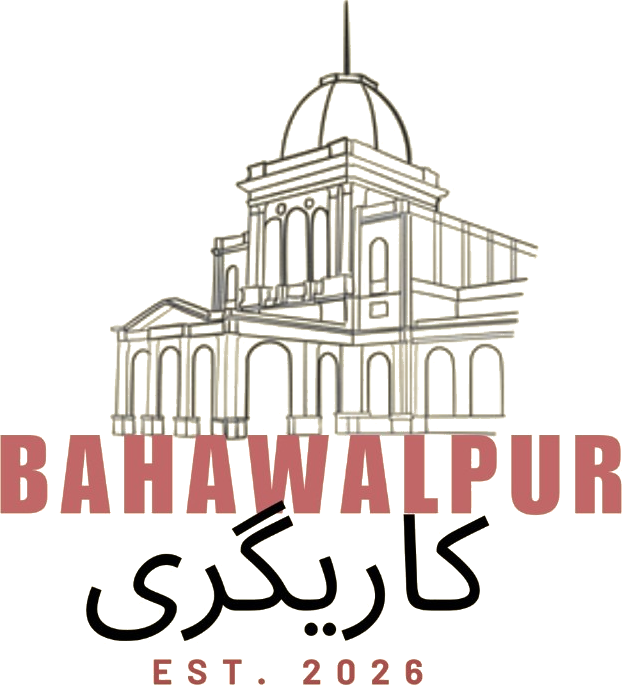

An embroidery guide
What is mukaish
(mukesh) work?
Mukaish — also written mukesh — is a centuries-old metalwork embroidery from Lucknow. Artisans twist minute lengths of fine metallic wire into cloth so the surface catches light in soft, scattered flecks. Think starlight on fabric: a hush of sparkle, never a heavy glare. Often joined with fine chikankari, mukaish speaks of restraint, patience, and true handwork.
When a textile seems to breathe with tiny metallic points, you are almost certainly looking at mukaish — among the most delicate crafts in the traditional repertoire. Below is a clear guide to what it is, how it differs from other metal embroidery, and why it marks quality.
The technique itself
In mukaish, small pieces of fine metallic wire — known as badla — are twisted into the weave by hand. Each twist becomes a raised speck that glints as the cloth moves. Born in Lucknow, the craft is slow and exacting. It does not flood the surface; it seasons it with a soft, dispersed shimmer.
Mukaish beside gota & zardozi
All three belong to South Asia’s metal embroidery family — yet each leaves a different impression on the eye and the hand.
The collection awaits
This website will be launched soon. Until then, you can order from Instagram.
@bahawalpurkaarigari